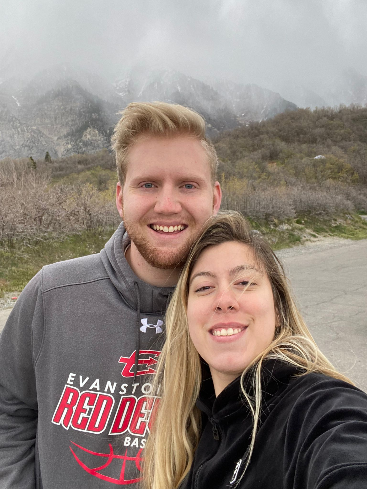
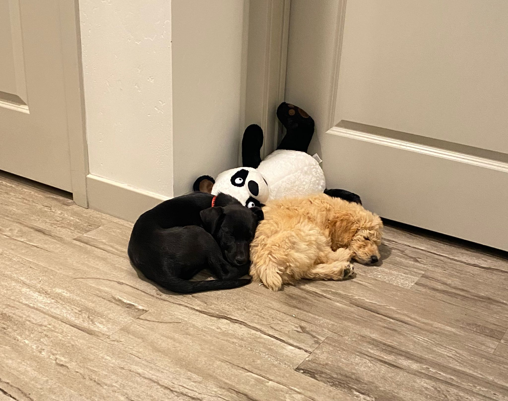

My Life
Hello everyone, mine name as seen above is Seth Davis. I am from a small town called Bear River found in the state of Wyoming. I grew up playing many different sport, which included soccer, basketball, football, golf and cross country. No matter what, I was always active and doing something outside. Which this led me to become a great fan out the outdoors. I love rock climbing, hiking and most of all camping. I do love to hunt and fish as well, when I get the time off from school where I am studying business management.
The picture above is a picture of me and my wife. We have been maried for 1 year when I made this website. She is amazing and the love of my life. She is from Argentina and is the best ever. She makes the best food and is always supportive of me no matter what. I am grateful that she is with me which can be a hard thing to do sometimes because I am very stubborn and always want to be right. But I have learned that there is nothing better in this world or life than to be with my wife and humble myself and understand that she is right. Also, my wife is amazing because she has great dreams and ideas of traveling to different places and accomplishing them, which is completely different from how I started out. Which to me was that I was just going to work until I couldn't anymore. However, my wife has help me see the world in a way that I have never thought about before. I am so grateful for her and the love she gives me!
The very last thing I wanted to share about myself is my love for animals such as dogs. Growing up my family always had dogs and I loved every single one of them. I knew that when I got older I was going to get a dog of my own, with my own money because my parents bought the last ones we had. So, that leads me to the picture above. These are my two 5 month old puppies, Sirius who is the black border collie and Lily who is the standard poodle. I love my dogs and they have helped me understand who I am and they help my wife a lot as well, since I am busy with school and work all the time. Sirius which his name come form Harry Potter is just like my wife, he is very loving and caring and always wants to be by your side, no matter what happens he see the good in you and will love you forever. Then we have Lily whos name is also from Harry Potter. I see her much more like me, she is a very stubborn dog and always like to either fight back by barking or just completely ignores us. Lily is also very energetic and has tons of fun which is just like me! Most of the time I can't hold still and just love to move and have fun. My life has been amazing so far and will contiue to get better, which I'm grateful for and I'm glad I can do it with my lovely wife by my side and my two dogs as well. I hope you enjoyed reading a little more about me!